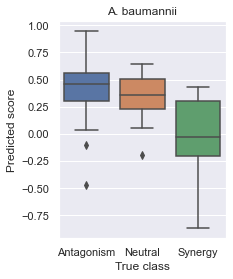

How to use indigopy
Example code for how to use the indigopy package. The sample data used in this example notebook is derived from the INDIGO, INDIGO-MTB, and MAGENTA publications.
Set up environment
[1]:
# Import dependencies
import pandas as pd
from scipy.stats import spearmanr
from sklearn.metrics import r2_score, classification_report
from sklearn.ensemble import RandomForestClassifier, RandomForestRegressor
import seaborn as sns
import matplotlib.pyplot as plt
# Import package functions
import sys
sys.path.append('c:/Users/carol/github/INDIGOpy/') # modify if testing locally in different machine; remove once package is published
from indigopy.core import load_sample, featurize, classify
Example: E. coli
The following analysis and results were originally reported in the INDIGO paper.
- Training dataset: 105 two-way interactions between 15 antibiotics
- Testing dataset: 66 two-way interactions between the 15 antibiotics in the training set + 4 new antibiotics
[2]:
# Load sample data
sample = load_sample('ecoli')
# Define input arguments
key = sample['key']
profiles = sample['profiles']
feature_names = sample['feature_names']
train_ixns = sample['train']['interactions']
train_scores = sample['train']['scores']
test_ixns = sample['test']['interactions']
test_scores = sample['test']['scores']
# Determine ML features
train_data = featurize(train_ixns, profiles, feature_names=feature_names, key=key, silent=True)
test_data = featurize(test_ixns, profiles, feature_names=feature_names, key=key, silent=True)
X_train, X_test = train_data['feature_df'].to_numpy().transpose(), test_data['feature_df'].to_numpy().transpose()
# Determine class labels
thresh, classes = (-0.5, 2), ('S', 'N', 'A')
train_labels = classify(train_scores, thresholds=thresh, classes=classes)
test_labels = classify(test_scores, thresholds=thresh, classes=classes)
# Train and apply a regression-based model
reg_model = RandomForestRegressor()
reg_model.fit(X_train, train_scores)
reg_y = reg_model.predict(X_test)
r, p = spearmanr(test_scores, reg_y)
r2 = r2_score(test_scores, reg_y)
print('Regression results:')
print('\tSpearman R = {}'.format(round(r, 4)))
print('\tSpearman p = {:.3g}'.format(p))
print('\tR2 = {}'.format(round(r2, 4)))
# Train and apply a classification-based model
class_model = RandomForestClassifier()
class_model.fit(X_train, train_labels)
class_y = class_model.predict(X_test)
print('Classification results:')
print(classification_report(test_labels, class_y))
Defining INDIGO features: 100%|██████████| 105/105 [00:00<00:00, 406.95it/s]
Defining INDIGO features: 100%|██████████| 66/66 [00:00<00:00, 464.53it/s]
Regression results:
Spearman R = 0.6575
Spearman p = 2e-09
R2 = 0.3895
Classification results:
precision recall f1-score support
A 0.50 0.31 0.38 13
N 0.68 0.90 0.78 42
S 0.50 0.09 0.15 11
accuracy 0.65 66
macro avg 0.56 0.43 0.44 66
weighted avg 0.61 0.65 0.59 66
Example: M. tuberculosis
The following analysis and results were originally reported in the INDIGO-MTB paper.
- Training dataset: 196 two- to five-way interactions between 40 antibacterials
- Testing dataset: 36 two- to three-way interactions between the 13 antibacterials
- Clinical dataset: clinical outcomes for 57 two- to five-way interactions between 7 antibacterials
[3]:
# Load sample data
sample = load_sample('mtb')
# Define input arguments
key = sample['key']
profiles = sample['profiles']
feature_names = sample['feature_names']
train_ixns = sample['train']['interactions']
train_scores = sample['train']['scores']
test_ixns = sample['test']['interactions']
test_scores = sample['test']['scores']
clinical_ixns = sample['clinical']['interactions']
clinical_scores = sample['clinical']['scores']
# Determine ML features
train_data = featurize(train_ixns, profiles, feature_names=feature_names, key=key, silent=True)
test_data = featurize(test_ixns, profiles, feature_names=feature_names, key=key, silent=True)
clinical_data = featurize(clinical_ixns, profiles, feature_names=feature_names, key=key, silent=True)
X_train, X_test = train_data['feature_df'].to_numpy().transpose(), test_data['feature_df'].to_numpy().transpose()
X_clinical = clinical_data['feature_df'].to_numpy().transpose()
# Determine class labels
thresh, classes = (0.9, 1.1), ('S', 'N', 'A')
train_labels = classify(train_scores, thresholds=thresh, classes=classes)
test_labels = classify(test_scores, thresholds=thresh, classes=classes)
# Train and apply a regression-based model
reg_model = RandomForestRegressor()
reg_model.fit(X_train, train_scores)
reg_y = reg_model.predict(X_test)
r, p = spearmanr(test_scores, reg_y)
r2 = r2_score(test_scores, reg_y)
print('Regression results:')
print('\tSpearman R = {}'.format(round(r, 4)))
print('\tSpearman p = {:.3g}'.format(p))
print('\tR2 = {}'.format(round(r2, 4)))
# Train and apply a classification-based model
class_model = RandomForestClassifier()
class_model.fit(X_train, train_labels)
class_y = class_model.predict(X_test)
print('Classification results:')
print(classification_report(test_labels, class_y))
# Apply model to clinical data
clinical_y = reg_model.predict(X_clinical)
r, p = spearmanr(clinical_scores, clinical_y)
print('Clinical results:')
print('\tSpearman R = {}'.format(round(-r, 4)))
print('\tSpearman p = {:.3g}'.format(p))
Defining INDIGO features: 100%|██████████| 196/196 [00:00<00:00, 512.41it/s]
Defining INDIGO features: 100%|██████████| 36/36 [00:00<00:00, 538.73it/s]
Defining INDIGO features: 100%|██████████| 57/57 [00:00<00:00, 552.91it/s]
Regression results:
Spearman R = 0.5348
Spearman p = 0.000779
R2 = 0.122
Classification results:
precision recall f1-score support
A 0.62 0.31 0.42 16
N 0.00 0.00 0.00 1
S 0.73 0.84 0.78 19
accuracy 0.58 36
macro avg 0.45 0.38 0.40 36
weighted avg 0.66 0.58 0.60 36
Clinical results:
Spearman R = 0.5035
Spearman p = 6.55e-05
Example: S. aureus
The following analysis and results were originally reported in the INDIGO paper.
- Training dataset: 171 two-way interactions between 19 antibiotics measured in E. coli
- Testing dataset: 45 two-way interactions between the 10 antibiotics measured in S. aureus
[4]:
# Load sample data
sample = load_sample('saureus')
# Define input arguments
key = sample['key']
profiles = sample['profiles']
feature_names = sample['feature_names']
train_ixns = sample['train']['interactions']
train_scores = sample['train']['scores']
test_ixns = sample['test']['interactions']
test_scores = sample['test']['scores']
strains = sample['orthology']['strains']
orthology_map = sample['orthology']['map']
# Determine ML features
train_data = featurize(train_ixns, profiles, feature_names=feature_names, key=key, silent=True)
test_data = featurize(test_ixns, profiles, feature_names=feature_names, key=key, silent=True,
strains=strains, orthology_map=orthology_map)
X_train, X_test = train_data['feature_df'].to_numpy().transpose(), test_data['feature_df'].to_numpy().transpose()
# Determine class labels
thresh, classes = (-0.5, 2), ('S', 'N', 'A')
train_labels = classify(train_scores, thresholds=thresh, classes=classes)
test_labels = classify(test_scores, thresholds=thresh, classes=classes)
# Train and apply a regression-based model
reg_model = RandomForestRegressor()
reg_model.fit(X_train, train_scores)
reg_y = reg_model.predict(X_test)
r, p = spearmanr(test_scores, reg_y)
r2 = r2_score(test_scores, reg_y)
print('Regression results:')
print('\tSpearman R = {}'.format(round(r, 4)))
print('\tSpearman p = {:.3g}'.format(p))
print('\tR2 = {}'.format(round(r2, 4)))
# Train and apply a classification-based model
class_model = RandomForestClassifier()
class_model.fit(X_train, train_labels)
class_y = class_model.predict(X_test)
print('Classification results:')
print(classification_report(test_labels, class_y))
Defining INDIGO features: 100%|██████████| 171/171 [00:00<00:00, 508.65it/s]
Defining INDIGO features: 100%|██████████| 45/45 [00:00<00:00, 569.02it/s]
Mapping orthologous genes: 100%|██████████| 1/1 [00:01<00:00, 1.99s/it]
Regression results:
Spearman R = 0.5428
Spearman p = 0.000117
R2 = -1.257
Classification results:
precision recall f1-score support
A 0.00 0.00 0.00 2
N 0.49 1.00 0.66 22
S 0.00 0.00 0.00 21
accuracy 0.49 45
macro avg 0.16 0.33 0.22 45
weighted avg 0.24 0.49 0.32 45
c:\Users\carol\AppData\Local\Programs\PythonCodingPack\lib\site-packages\sklearn\metrics\_classification.py:1221: UndefinedMetricWarning: Precision and F-score are ill-defined and being set to 0.0 in labels with no predicted samples. Use `zero_division` parameter to control this behavior.
_warn_prf(average, modifier, msg_start, len(result))
Example: A. baumannii
The following analysis and results were originally reported in the MAGENTA paper.
- Training dataset: 338 two- to three-way interactions between 24 antibiotics measured in E. coli cultured in various media conditions
- Testing dataset: 45 two-way interactions between the 8 antibiotics measured in A. baumannii
[5]:
# Load sample data
sample = load_sample('abaumannii')
# Define input arguments
key = sample['key']
profiles = sample['profiles']
feature_names = sample['feature_names']
train_ixns = sample['train']['interactions']
train_scores = sample['train']['scores']
test_ixns = sample['test']['interactions']
test_scores = sample['test']['scores']
strains = sample['orthology']['strains']
orthology_map = sample['orthology']['map']
# Determine ML features
train_data = featurize(train_ixns, profiles, feature_names=feature_names, key=key, silent=True)
test_data = featurize(test_ixns, profiles, feature_names=feature_names, key=key, silent=True,
strains=strains, orthology_map=orthology_map)
X_train, X_test = train_data['feature_df'].to_numpy().transpose(), test_data['feature_df'].to_numpy().transpose()
# Determine class labels
thresh, classes = (-0.5, 0), ('S', 'N', 'A')
train_labels = classify(train_scores, thresholds=thresh, classes=classes)
test_labels = classify(test_scores, thresholds=thresh, classes=classes)
# Train and apply a regression-based model
reg_model = RandomForestRegressor()
reg_model.fit(X_train, train_scores)
reg_y = reg_model.predict(X_test)
r, p = spearmanr(test_scores, reg_y)
r2 = r2_score(test_scores, reg_y)
print('Regression results:')
print('\tSpearman R = {}'.format(round(r, 4)))
print('\tSpearman p = {:.3g}'.format(p))
print('\tR2 = {}'.format(round(r2, 4)))
# Train and apply a classification-based model
class_model = RandomForestClassifier()
class_model.fit(X_train, train_labels)
class_y = class_model.predict(X_test)
print('Classification results:')
print(classification_report(test_labels, class_y))
# Visualize results
df = pd.DataFrame({'x': test_labels, 'y': reg_y})
df.replace({'A': 'Antagonism', 'N': 'Neutral', 'S': 'Synergy'}, inplace=True)
sns.set(rc={'figure.figsize':(3, 4)})
ax = sns.boxplot(x='x', y='y', data=df, order=['Antagonism', 'Neutral', 'Synergy'], )
ax.set(title='A. baumannii', xlabel='True class', ylabel='Predicted score')
plt.show()
Defining INDIGO features: 100%|██████████| 338/338 [00:00<00:00, 497.36it/s]
Defining INDIGO features: 100%|██████████| 45/45 [00:00<00:00, 589.56it/s]
Mapping orthologous genes: 100%|██████████| 1/1 [00:02<00:00, 2.58s/it]
Regression results:
Spearman R = 0.614
Spearman p = 7.28e-06
R2 = -0.3302
Classification results:
precision recall f1-score support
A 0.43 0.94 0.59 17
N 0.00 0.00 0.00 11
S 0.86 0.35 0.50 17
accuracy 0.49 45
macro avg 0.43 0.43 0.36 45
weighted avg 0.49 0.49 0.41 45
